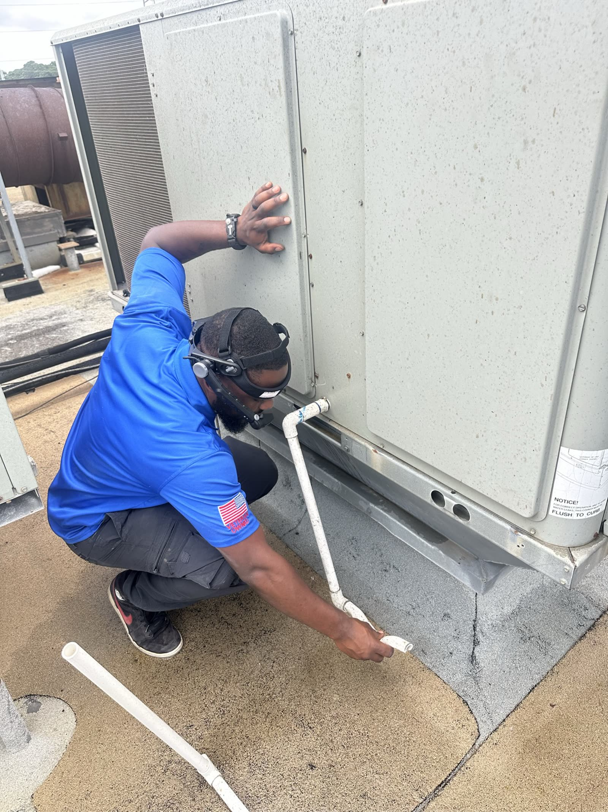
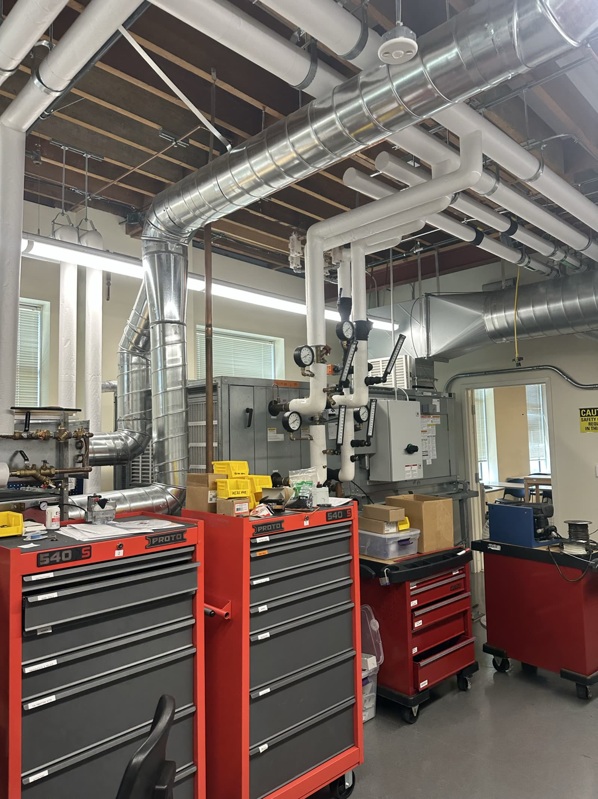

Making the field
queryable
Kebra captures what happens across physical operations, builds a live operating memory of the field, and deploys AI agents that automate the work that follows.
The limit of what AI can do in field operations is not the model. It’s what the model knows about what happens in the field.
Kebra captures that context and turns it into the operating memory AI can act on.
Built with real teams doing physical work.

Automating back office work from what happens in the field.

Capturing skilled work as it happens around real equipment.
Capturing site progress while coordinating inspection teams at scale.
From the field to action.
The field today
Belt was shredded — swapped it. Airflow’s back to normal and the pulleys are realigned.


Job #4821 — filed in ServiceTitan
2× A46 drive belts · pickup tomorrow
Status → Closed · Next PM scheduled (April)
Airflow's back to normal — belt replaced, pulleys realigned. Report attached.
What happens in the field becomes context AI can act on.

From the field to action.
The field today
What happens in the field becomes context AI can act on.
Built to capture work wherever it happens.
Turn field context
into automation.
Schedule a 30-minute walkthrough with the Kebra team — we'll show you how it works on the kind of jobs your technicians actually run.